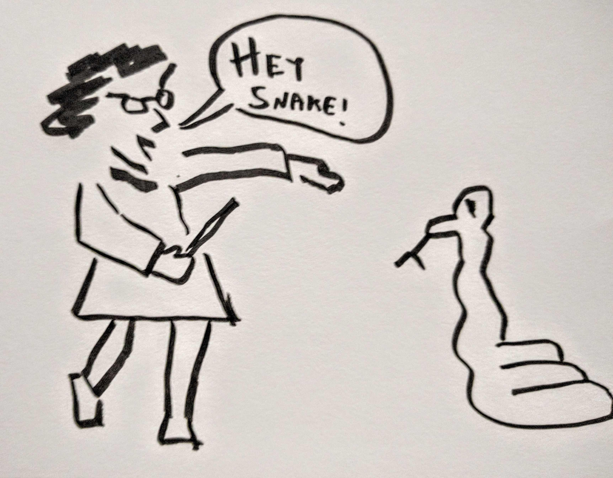

August 16, 2016

I'm not a reader of the Harry Potter books, but have read the last one in the series. Either from that book or the movies, I know about Parseltongue: but what is it really? Today someone pointed out that it was not a "language", but rather the ability to understand snakes and serpentia. Does that imply that while understanding snakes, Harry couldn't speak to them? Or that he could speak to them in English and through his magic the snake would understand in their language and vice versa. Or maybe snakes don't have the cognitive ability to even "speak" and that the magic was filling in what the snake would have said if snakes could talk.
Really -- what would a snake say if it could talk? What would any animal say, really?